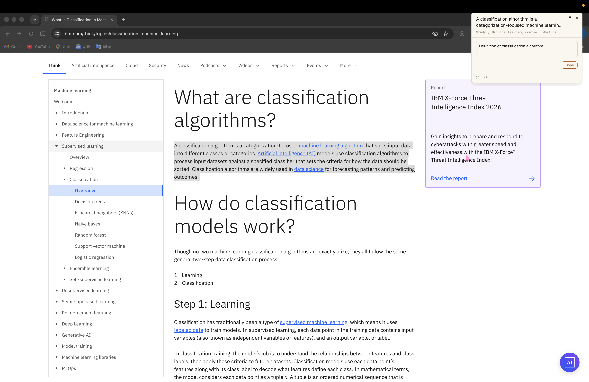
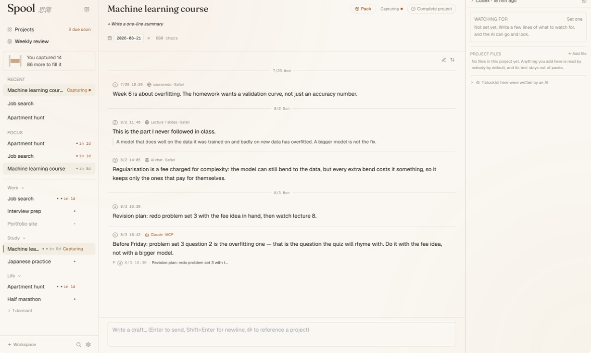
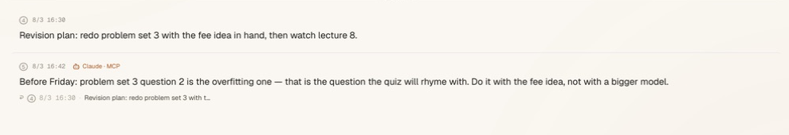

去重是一次性的补救
实测到的那一对重复内容占了 Pack 的 13%。把它标记为作废解决了眼前的体量问题，同时那条更早的块仍留在库里，也仍然搜得到。
一份关于本地优先项目背景中枢的产品与工程记录：它写给谁用，什么东西会越过网络边界，AI 可以写入什么，以及哪些地方是在系统遇上真实工作之后才改掉的。
Spool 写给同时推进好几件长期事情、而手上的工具彼此之间没有记忆的人：研究者、研究生、开发者，以及独自做一件东西的人。真正的代价不是“记笔记”，而是每开一场新的 AI 对话，都要把同一个项目重新讲一遍——哪篇论文重要、哪个决定已经失败过、上周之后又变了什么。
这个产品的目标刻意收得很窄：重新进入一个项目，应该只花一次粘贴，而不是回到聊天记录、邮件、标签页和记不太清的决定里做考古。它待在文档工具的上游。项目是一份安静的、只往后追加的记录，不是协作画布，也不用来取代 Notion。
调研边界。第一版是开发者拿自己手上的多个项目边用边改做出来的。这带来了几处有价值的反转，但它不是面向外部用户的调研；和其他用户一起验证，仍然是发布之后的事。
三个动作构成一个闭环。它们都不需要模型出现在关键路径上。

桌面界面、MCP 服务器和命令行引擎位，是围着同一份事实来源的三个本地界面。下图把“运行在你自己的电脑上”和“属于 Spool 进程”分开画，这样关于网络的说法可以直接看，而不是靠推断。
图形界面和捕捉浮窗在本机与 Rust/Tauri 内核通信。内核拥有唯一的那个 SQLite 数据库。运行 spool --mcp 会把同一个库通过 stdio 交给 AI 客户端读取；命令行引擎位走的是另一条路——把 Claude Code、Codex CLI 或 Gemini CLI 作为独立进程启动。Gemini 支持“周回顾”和起草跟进目标，但不支持“跟进”。两条路都保住了同一个区分：哪些是 Spool 在本机做的事，哪些是另一个程序在联网做的事。

读取和写入是两种分开的权限。内容只会装在你自己安装并授权过的程序里离开这台机器；每一条路径上，越过网络的那个程序都写明了名字。
| 路径 | 可能越过边界的内容 | 联网的程序 |
|---|---|---|
| MCP 客户端 | 客户端从本机 stdio 服务器明确读走的内容 | 那个外部 AI 客户端 |
| 命令行引擎动作 | 所选动作需要的那些项目块 | Claude Code、Codex CLI 或 Gemini CLI；Gemini 不含“跟进” |
| 其他任何情况 | 没有 | 没有 |

macOS 上，Spool 直接以经 Developer ID 签名、并由 Apple 公证过的磁盘镜像分发。不走 Mac App Store，是因为沙盒和全系统范围的捕捉手势冲突。应用和磁盘镜像是分开检查的：用户下载的是外面那层镜像，所以“公证过的应用装在没公证的镜像里”并不够。Windows 安装包由 CI 产出，首版未签名发布——证书是一笔按年续的开销，而这个平台还没被验证过；在下载页上假装它签过，比 SmartScreen 那一次提示更糟。
发布证据
89ebaceb-f883-4b1c-a6eb-86392769d132 已通过f7a15d9a-737d-4132-a54e-578d9f41fd7f 已通过84625dbSpool_0.4.0_aarch64.dmg933b9a7fb10a25f72cbd922c7c0a1d89fe02ef83b6a3885fba0dc0ec08b7df54accepted · source=Notarized Developer ID · 两个产物都是来源：Case Study Ledger §1.2，记录于 2026-08-08。
到 GitHub 查看这次发布和它的产物。官网上那个固定的下载地址，指向与带版本号的产物一同发布的固定文件名副本。
案例研究台账为每一个对外公开的数字都记下了命令和证据来源。其中两次实测改变了产品的优先级，而不只是描述了做完的系统。
实测到的那一对重复内容占了 Pack 的 13%。把它标记为作废解决了眼前的体量问题，同时那条更早的块仍留在库里，也仍然搜得到。
只用一句大白话的请求，一个外部客户端就建好了项目并存进 11 个块，平均 970 字符。它自己从 2 次出错里恢复过来，没有求助，之后还用 Pack 工具检查了自己的成果。
另有一次真实联网搜索的运行花了大约 $0.45，暴露出来的问题，是拿模拟数据和只读提示词都没能发现的。
事后复盘里真正有用的单位不是那个补丁，而是留下来的那道防线。
一个开发构建遇上了更新过的线上库结构，走进了一条无条件重建的分支。恢复时从 SQLite 的空闲页里刨回了 33 个块，但项目标题没了。留下来的改动是：迁移改成出错即停、带名字的迁移注册表加跨语言版本核对、迁移前自动快照、装机验证走隔离构建，以及一条规矩——首次运行的种子数据只能从空库那条路进来。
跟进结果要求带上来源链接，但 3 条提议里有 2 条没带，因为模型把链接放进了结尾那段话里。提示词改成针对具体字段之后，下一次实测的运行里 5 条提议全带上了链接。现在这条规矩很简单：提示词里写了，不等于它就是行为——要有一次真实运行来证明。
一个状态选择器每次调用都新建一个数组，触发了无限渲染。自动化测试里没有任何一条会打开打包后的窗口。现在发布验证包含亲眼看一眼隔离的签名构建；界面是否正常，不再靠“能编译”来推断。
这里没有占位视频。浏览器里的交互演示会走完捕捉 → 项目 → Pack 的整个流程；上面那些截图来自当前的隔离桌面构建。
Spool 由 Ocean（KIM-ocean-HZ）设计并开发。源码、路线图和完整的产品准则在 GitHub；可复现的公开数字在 Case Study Ledger。